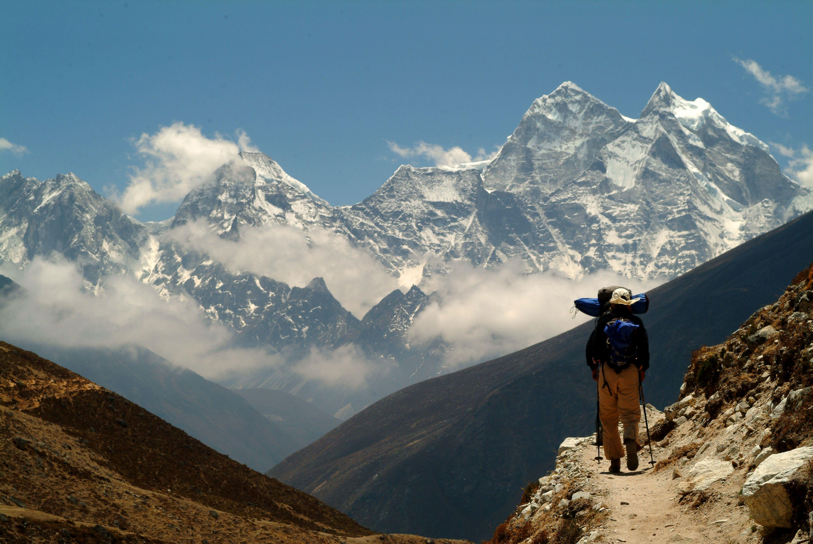

When we started researching treks, the info was scattered — permits in one place, seasons somewhere else, altitude notes in a forum post.
TrekNepal puts the basics together. It does not book trips; it helps you narrow down a route before you talk to an agency.

Filter treks by difficulty and region until you find a few that match what you're after.
Pick up to three routes and check altitude, duration, and best season next to each other.
Not sure yet? Message us with your questions and we'll help you narrow it down.
A few notes from people who used TrekNepal to plan their trip.
The route comparison tool made it so much easier to decide between Annapurna and Langtang. Ended up picking Langtang and it was perfect for our fitness level.
I liked that permit info and altitude notes were all in one place instead of scattered across ten different forum posts. Saved me a lot of research time.
Sent an enquiry through the contact form and got a helpful reply within a day. Made choosing my first trek a lot less stressful.